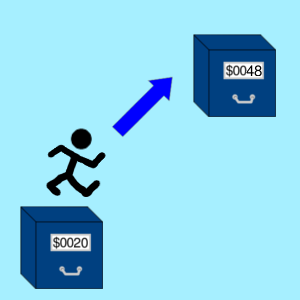

JMP
Skok
Opis

Wykonuje skok do innego miejsca w programie.
Z technicznego punktu widzenia, nie następuje żaden fizyczny skok, lecz jedynie zmiana wartości licznika programu na wartość podaną lub wskazaną przez argument, w zależności od trybu adresowania.
Jest to jedyny rozkaz, który obsługuje adresowanie bezwzględne pośrednie.
Tabela opkodów
| Opkod | Tryb adresowania | Czas wykonywania (cykle) |
|---|---|---|
| $4C |  |
3 |
| $6C |  |
5 |